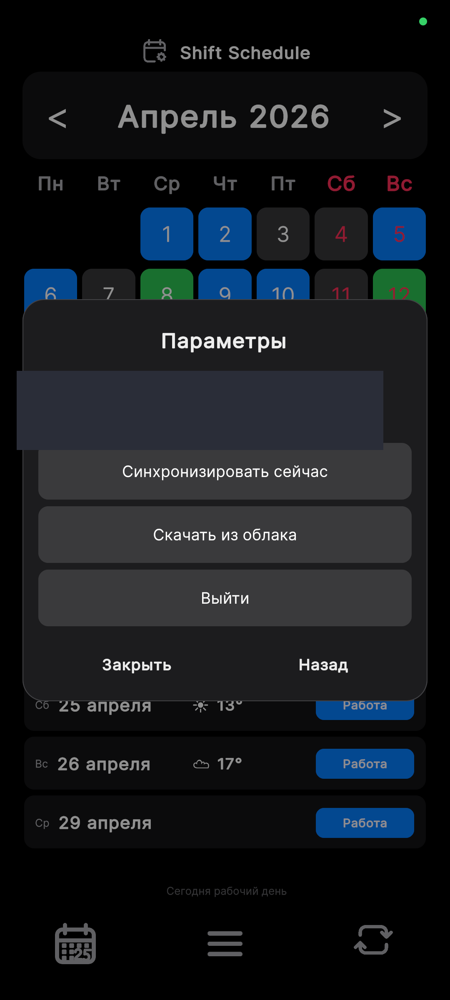
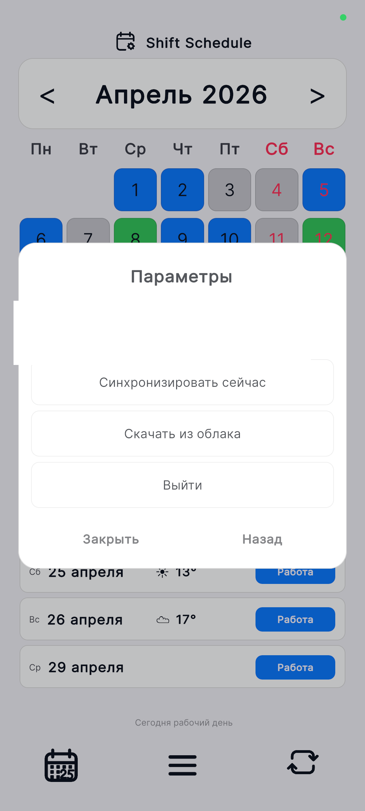
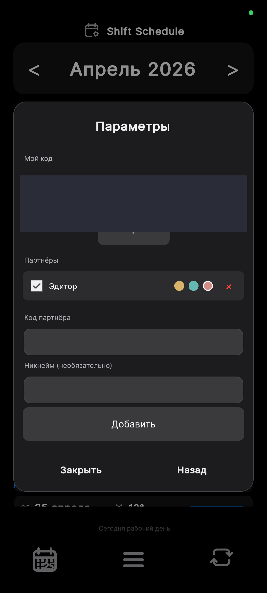
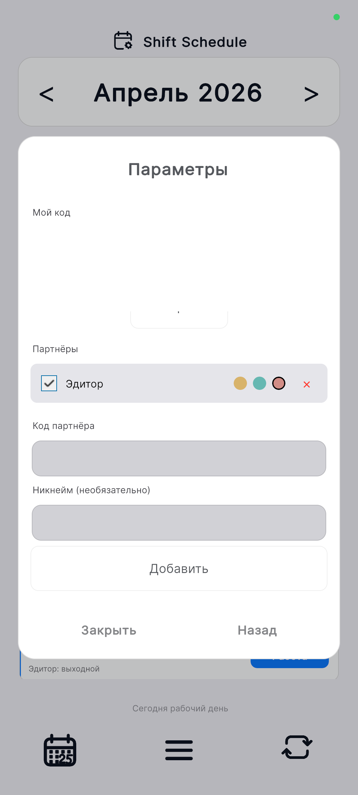
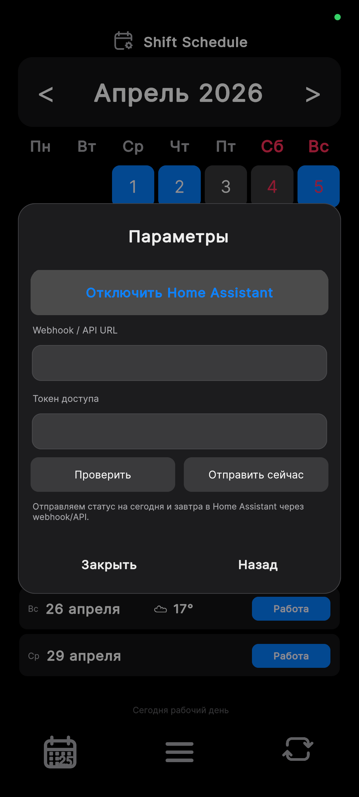
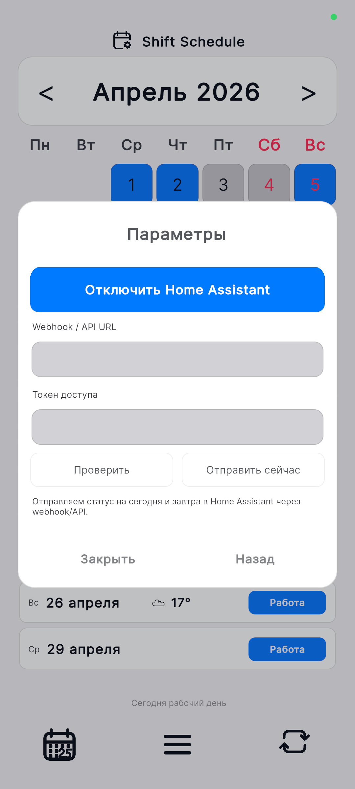

Инструкции
Подробные руководства по PRO-функциям: синхронизация, партнёры и Home Assistant.
Облачная синхронизация
Зарегистрируйтесь один раз — и ваш график автоматически сохраняется в облаке. Установите приложение на второй телефон или планшет, войдите в тот же аккаунт и скачайте данные. Всё синхронизировано.


- Откройте Настройки → Синхронизация → Аккаунт.
- Нажмите Войти и введите email и пароль. Если аккаунта нет — нажмите Зарегистрироваться.
- После входа ваши данные загрузятся в облако автоматически. Дата последней синхронизации отображается под email.
- На втором устройстве войдите в тот же аккаунт и нажмите Скачать из облака — данные появятся мгновенно.
- Используйте Синхронизировать сейчас, чтобы вручную загрузить свежие данные с устройства в облако.
Партнёры
Добавьте коллегу или члена семьи как партнёра — и видите его выходные прямо на своём календаре. Дни, когда вы оба отдыхаете, выделяются цветным маркером снизу.


- Оба пользователя должны иметь PRO и быть авторизованы в приложении.
- Первый пользователь открывает экран Партнёров и нажимает Скопировать под своим кодом — код попадает в буфер обмена. Отправьте этот код партнёру любым удобным способом: мессенджер, SMS и т.д.
- Второй пользователь вставляет код в поле Код партнёра, при желании вводит никнейм и нажимает Добавить.
- Партнёр появится в списке. Чекбокс слева включает и выключает отображение его расписания на вашем календаре.
- На календаре дни, когда все активные партнёры тоже отдыхают, получают жёлтый маркер снизу — сразу видно, когда у всех выходной.
Смены день/ночь
Если в вашем цикле чередуются дневные и ночные смены, используйте редактор день/ночь. Каждому слоту цикла можно задать тип: Дневная, Ночная или Выходной. В списке дней ночные смены отображаются со значком 🌙.
- Откройте Настройки → Расписание и настройте базовый цикл (якорная дата, количество рабочих и выходных дней).
- Нажмите кнопку Тип смен день/ночь — откроется редактор слотов цикла.
- Каждый слот представлен кнопкой с номером. Нажмите на слот, чтобы переключить его тип: День → Ночь → Выходной → День…
- Настройте время начала дневной и ночной смены: поля Начало дневной и Начало ночной внизу экрана (формат ЧЧ:ММ).
- Нажмите Применить — цикл сохранится, календарь пересчитается.
Будильники бета
Приложение расставляет системные будильники на ближайшие рабочие дни — за указанное количество минут до начала смены. Будильники обновляются автоматически при изменении статуса дня.
- Откройте Настройки → Расписание → Будильники.
- Нажмите Будильники: выкл., чтобы включить их. Кнопка станет активной.
- Настройте Заранее (минуты) — за сколько минут до смены сработает будильник. Нажмите на значение в центре, чтобы ввести число вручную, или используйте кнопки − и + (удерживайте для быстрого изменения).
- Выберите горизонт: 7, 14 или 30 дней вперёд — на сколько дней расставлять будильники.
- Нажмите Установить будильники. В списке дней рядом с рабочими сменами появится значок 🔔.
Функция в тестировании. Если будильник не сработал, отработал не в то время или вы нашли другую проблему — напишите нам на mirorstar@yandex.ru или в канал MAX. Ваш отзыв поможет сделать будильники надёжнее.
Home Assistant
Передавайте статус текущего дня в Home Assistant как сенсор. Используйте его в автоматизациях: включайте будильник в рабочие дни, меняйте освещение в выходные, отправляйте уведомления.


- В Home Assistant откройте Профиль → Долгосрочные токены доступа и создайте новый токен. Скопируйте его — он отображается один раз.
- В приложении откройте Настройки → Синхронизация → Home Assistant.
- Введите URL вебхука в формате:
http://192.168.1.100:8123/api/webhook/shift_schedule
или для внешнего доступа:
https://myhome.duckdns.org/api/webhook/shift_schedule
Гдеshift_schedule— этоwebhook_idиз пакета. - Вставьте скопированный токен доступа в соответствующее поле.
- Задайте имя сенсора (например,
shift_schedule). В HA он появится какsensor.shift_schedule. - Нажмите Сохранить. Состояние сенсора будет обновляться при каждом открытии приложения и при смене даты.
sensor.shift_schedule меняет состояние на work, действие — включить умный будильник. Или наоборот: при day_off — выключить.
Готовый пакет для Home Assistant
Ниже — справочный пакет с нужными сущностями, автоматизацией и сенсорами. Скопируйте его себе и настройте под свои нужды.
Шаг 1 — разрешите пакеты в configuration.yaml
# configuration.yaml
homeassistant:
packages: !include_dir_named packages
Шаг 2 — сохраните файл как packages/shift_schedule.yaml
# packages/shift_schedule.yaml # Справочный пакет ShiftSchedule для Home Assistant. # Создаёт сущности, принимает данные через вебхук и формирует русскоязычные сенсоры. shift_schedule: input_text: shift_today_status: name: Shift Today Status max: 50 icon: mdi:calendar-today shift_tomorrow_status: name: Shift Tomorrow Status max: 50 icon: mdi:calendar-arrow-right shift_next_work_date: name: Shift Next Work Date max: 50 icon: mdi:calendar-check shift_next_work_status: name: Shift Next Work Status max: 50 icon: mdi:briefcase-clock shift_last_update: name: Shift Last Update max: 80 icon: mdi:clock-check input_boolean: shift_work_today: name: Shift Work Today icon: mdi:briefcase shift_work_tomorrow: name: Shift Work Tomorrow icon: mdi:briefcase-clock automation: - alias: Shift Schedule Webhook id: shift_schedule_webhook mode: restart trigger: - platform: webhook webhook_id: shift_schedule # можно заменить на любое уникальное название allowed_methods: - POST action: - service: input_text.set_value target: entity_id: input_text.shift_today_status data: value: "{{ trigger.json.today_status | default('unknown') }}" - service: input_text.set_value target: entity_id: input_text.shift_tomorrow_status data: value: "{{ trigger.json.tomorrow_status | default('unknown') }}" - service: input_text.set_value target: entity_id: input_text.shift_next_work_date data: value: "{{ trigger.json.next_work_date | default('') }}" - service: input_text.set_value target: entity_id: input_text.shift_next_work_status data: value: "{{ trigger.json.next_work_status | default('') }}" - service: input_text.set_value target: entity_id: input_text.shift_last_update data: value: "{{ trigger.json.updated_at | default('') }}" - choose: - conditions: "{{ trigger.json.is_work_today | default(false) }}" sequence: - service: input_boolean.turn_on target: entity_id: input_boolean.shift_work_today default: - service: input_boolean.turn_off target: entity_id: input_boolean.shift_work_today - choose: - conditions: "{{ trigger.json.is_work_tomorrow | default(false) }}" sequence: - service: input_boolean.turn_on target: entity_id: input_boolean.shift_work_tomorrow default: - service: input_boolean.turn_off target: entity_id: input_boolean.shift_work_tomorrow template: - sensor: - name: Shift Today Status RU unique_id: shift_today_status_ru state: > {% set map = {'Work':'Работа','Rest':'Выходной','Extra':'Подработка','Vacation':'Отпуск','Sick':'Больничный'} %} {{ map.get(states('input_text.shift_today_status'), states('input_text.shift_today_status')) | trim }} icon: > {% set s = states('input_text.shift_today_status') %} {% if s == 'Work' %}mdi:briefcase {% elif s == 'Extra' %}mdi:briefcase-plus {% elif s == 'Vacation' %}mdi:beach {% elif s == 'Sick' %}mdi:medical-bag {% else %}mdi:sofa{% endif %} - name: Shift Tomorrow Status RU unique_id: shift_tomorrow_status_ru state: > {% set map = {'Work':'Работа','Rest':'Выходной','Extra':'Подработка','Vacation':'Отпуск','Sick':'Больничный'} %} {{ map.get(states('input_text.shift_tomorrow_status'), states('input_text.shift_tomorrow_status')) | trim }} icon: > {% set s = states('input_text.shift_tomorrow_status') %} {% if s == 'Work' %}mdi:briefcase {% elif s == 'Extra' %}mdi:briefcase-plus {% elif s == 'Vacation' %}mdi:beach {% elif s == 'Sick' %}mdi:medical-bag {% else %}mdi:sofa{% endif %} - name: Shift Next Work Status RU unique_id: shift_next_work_status_ru state: > {% set map = {'Work':'Работа','Rest':'Выходной','Extra':'Подработка','Vacation':'Отпуск','Sick':'Больничный'} %} {{ map.get(states('input_text.shift_next_work_status'), states('input_text.shift_next_work_status')) | trim }} icon: > {% set s = states('input_text.shift_next_work_status') %} {% if s == 'Work' %}mdi:briefcase {% elif s == 'Extra' %}mdi:briefcase-plus {% elif s == 'Vacation' %}mdi:beach {% elif s == 'Sick' %}mdi:medical-bag {% else %}mdi:sofa{% endif %} - name: Shift Next Work Date RU unique_id: shift_next_work_date_ru icon: mdi:calendar-arrow-right state: > {% set d = states('input_text.shift_next_work_date') %} {% if d and d | length == 10 %} {% set today = now().strftime('%Y-%m-%d') %} {% set tomorrow = (now() + timedelta(days=1)).strftime('%Y-%m-%d') %} {% set day_after = (now() + timedelta(days=2)).strftime('%Y-%m-%d') %} {% if d == today %}Сегодня {% elif d == tomorrow %}Завтра {% elif d == day_after %}Послезавтра {% else %} {% set parts = d.split('-') %} {% set months = ['января','февраля','марта','апреля','мая','июня','июля','августа','сентября','октября','ноября','декабря'] %} {{ parts[2] | int }} {{ months[parts[1] | int - 1] }} {% endif %} {% else %}—{% endif %}
Шаг 3 — перезапустите Home Assistant
- Перезапустите HA: Настройки → Система → Перезапустить.
- Проверьте, что появились сущности
input_text.shift_today_statusи другие. - В приложении укажите URL вашего HA и
webhook_idиз пакета (shift_scheduleпо умолчанию). - Откройте приложение — данные придут в HA автоматически.